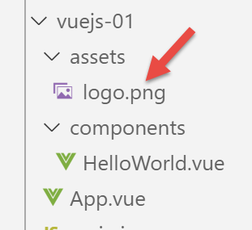

3. Projeto [vuejs-01]: O Básico
Para explicar o código executado em [vuejs-00], vamos simplificá-lo em [vuejs-01]. Duplicamos a pasta [vuejs-00] para [vuejs-01]:

O projeto [vuejs-01] consiste essencialmente em quatro ficheiros:
- [main.js] [2] é o ponto de entrada do projeto;
- [App.vue, HelloWorld.vue] [3-4] são componentes [Vue.js], contendo opcionalmente os seguintes elementos:
- [<template>...</template>]: código HTML;
- [<script>...</script>]: o código JavaScript associado ao código HTML;
- [<style>...</style>]: os estilos CSS associados ao código HTML;
- [public/index.html] [5]: o documento HTML apresentado pelo comando [npm run serve];
O ficheiro [public/index.html] apresentado quando o projeto é executado é este:
<!DOCTYPE html>
<html lang="en">
<head>
<meta charset="utf-8">
<meta http-equiv="X-UA-Compatible" content="IE=edge">
<meta name="viewport" content="width=device-width,initial-scale=1.0">
<link rel="icon" href="<%= BASE_URL %>favicon.ico">
<title>vuejs</title>
</head>
<body>
<noscript>
<strong>We're sorry but vuejs doesn't work properly without JavaScript enabled. Please enable it to continue.</strong>
</noscript>
<div id="app"></div>
<!-- built files will be auto injected -->
</body>
</html>
Este ficheiro HTML, portanto, não exibe nada de forma estática. Não há código HTML aqui. A exibição é dinâmica: o código JavaScript do projeto irá gerar HTML que substituirá completamente a tag [<div id=’app’>] na linha 14. O código HTML gerado pelo JavaScript do projeto e inserido no lugar da tag [<div>] na linha 14 provém das tags [template] dos componentes [vue.js], os ficheiros com a extensão [.vue].
O código HTML é inserido dinamicamente na linha 14 pelo seguinte script [vuejs-01/main.js]:
// imports
import Vue from 'vue'
import App from './App.vue'
// configuration
Vue.config.productionTip = false
// instanciation projet [App]
new Vue({
render: h => h(App),
}).$mount('#app')
Comentários
- linha 2: o objeto [Vue] é fornecido pela estrutura [vue.js];
- linha 3: o objeto [App] é fornecido pelo ficheiro [vuejs-01/App.vue];
- linha 6: configuração do objeto [Vue];
- Linhas 9–11: Estas são as linhas que:
- geram o código HTML da aplicação. Linha 10: o ficheiro [App.vue] gera-o;
- carregam o código HTML gerado na linha 10 na secção [<div id='app'></div>] do ficheiro [public/index.html];
Qualquer projeto [Vue.js] pode manter o ficheiro [index.html] tal como está.
O ficheiro [App.vue] do projeto inicial [vuejs-00] é simplificado da seguinte forma no projeto [vuejs-01]:
<template>
<div id="myApp">
<img alt="Vue logo" src="./assets/logo.png" />
<HelloWorld msg="Notre première application Vue.js" />
</div>
</template>
<script>
import HelloWorld from "./components/HelloWorld.vue";
export default {
name: "app",
components: {
HelloWorld
}
};
</script>
Comentários
- Um fragmento [.vue] é composto por, no máximo, três secções:
- [<template>...</template>] : código HTML;
- [<script>...</script>] : código JavaScript associado ao código HTML;
- [<style>...</style>]: os estilos CSS associados ao código HTML;
Aqui, não temos uma secção [style].
- linhas 1–6: o código HTML do fragmento (página, componente, vista, ...);
- linhas 2-5: a secção [template] pode conter apenas um elemento. Geralmente, colocamos uma secção [div] que engloba todo o HTML do fragmento. Também podemos colocar uma tag <template>;
- linha 3: uma imagem;

- linha 4: um componente chamado [HelloWorld]. O princípio do [Vue.js] é construir páginas web utilizando fragmentos definidos em ficheiros [.vue], como o [App.vue] aqui. Este componente é definido pelo ficheiro [HelloWorld.vue] definido na linha 9 do script JavaScript associado;
- linha 4: um componente pode aceitar parâmetros. O parâmetro aqui é o atributo [msg];
- linhas 8–17: o script JavaScript para o fragmento (ou componente);
- linha 9: para utilizar o componente [HelloWorld] dentro do componente [App], a sua definição deve ser importada para a secção [script];
- linhas 11–16: o script define um objeto e exporta-o para o tornar disponível externamente;
- linha 12: o atributo [name] define o nome do componente exportado;
- linhas 13–15: o atributo [components] lista os componentes utilizados pelo componente [App]. Estes são exportados juntamente com ele;
Linha 9: O componente [HelloWorld] não tem de ter o mesmo nome que o ficheiro que o define. Poderia ser importado como [X] e exportado como o componente [Bonjour]:

- Linha 14: O componente [X] é exportado com o nome [Bonjour]. É então utilizado com esse nome, na linha 4;
A primeira versão é a mais comum, por isso definiremos os nossos componentes desta forma;
<template>
<div id="myApp">
<img alt="Vue logo" src="./assets/logo.png" />
<HelloWorld msg="Notre première application Vue.js" />
</div>
</template>
<script>
import HelloWorld from "./components/HelloWorld.vue";
export default {
name: "app",
components: {
HelloWorld
}
};
</script>
A linha 14 é uma forma abreviada do código [HelloWorld : HelloWorld]: o componente [HelloWorld] (à direita, importado na linha 9) é exportado com o nome [HelloWorld] (à esquerda).

Simplificamos o componente [HelloWorld.vue] da seguinte forma:
<template>
<div>
<h1>{{ msg }}</h1>
</div>
</template>
<script>
export default {
name: "HelloWorld",
props: {
msg: String
}
};
</script>
Comentários
- O componente [HelloWorld] tem a mesma estrutura de ficheiros que o componente principal [App];
- linha 3: avalia uma expressão JavaScript, neste caso a expressão [msg];
- linhas 10–12: definem as propriedades do componente, mais especificamente os seus parâmetros. Quando o componente [App] instanciou um componente [HelloWorld], fê-lo utilizando a seguinte sintaxe:
<HelloWorld msg="Notre première application Vue.js" />
O componente [HelloWorld] é instanciado através da atribuição de um valor ao parâmetro (atributo) [msg]. Se analisarmos o [template] do componente [HelloWorld], obtemos:
<div>
<h1>Notre première application Vue.js</h1>
</div>
- linhas 7–14: as propriedades do componente definidas como um objeto que é exportado;
- linha 9: o componente é exportado com o nome [HelloWorld];
- linhas 10–12: os seus parâmetros são definidos pela propriedade [props];
Por fim, se combinarmos os modelos dos dois componentes [App, HelloWorld] utilizados, o ficheiro [index.html] apresentado será o seguinte:
<!DOCTYPE html>
<html lang="en">
<head>
<meta charset="utf-8">
<meta http-equiv="X-UA-Compatible" content="IE=edge">
<meta name="viewport" content="width=device-width,initial-scale=1.0">
<link rel="icon" href="<%= BASE_URL %>favicon.ico">
<title>vuejs</title>
</head>
<body>
<noscript>
<strong>We're sorry but vuejs doesn't work properly without JavaScript enabled. Please enable it to continue.</strong>
</noscript>
<div id="myApp">
<img alt="Vue logo" src="./assets/logo.png" />
<div>
<h1>Notre première application Vue.js</h1>
</div>
</div></body>
</html>
Iniciamos a aplicação modificando o comando [serve] [1] no ficheiro [package.json]:

A página apresentada é então [2].
Agora, vamos ver o código desta página:

- Em [1], clique com o botão direito do rato;
- em [2], o código-fonte da página. Podemos ver que este é o código do ficheiro inicial [index.html], e não foi isso que foi apresentado. Foi, de facto, a página [index.html] que foi carregada inicialmente. Depois, dinamicamente, o código JavaScript modificou esta página, mas isso não nos é mostrado;
Quando as páginas são geradas dinamicamente por JavaScript, a opção [2] é inútil. Deve aceder às ferramentas do navegador (F12 no Firefox) para visualizar o código da página atualmente apresentada:

- em [1], o inspetor DOM (Document Object Model) para o documento exibido;
- em [2], o que este DOM realmente contém;
- [3-4], ferramentas que utilizaremos para visualizar os objetos JavaScript utilizados pela estrutura [Vue.js];
- [4] é uma extensão (aqui para o Firefox) para depurar aplicações [Vue.js]:
- para o Firefox: [https://addons.mozilla.org/fr/firefox/addon/vue-js-devtools/];
- para o Chrome: [https://chrome.google.com/webstore/detail/vuejs-devtools/nhdogjmejiglipccpnnnanhbledajbpd];
Vamos examinar o separador [Vue] [4]:

A vista [1-4] mostra-nos a estrutura [Vue.js] do documento: a raiz do documento [2] (index.html) contém o componente [App] (3), que, por sua vez, contém o componente [HelloWorld] (4). Ao clicar em [4], são apresentadas as propriedades do componente [HelloWorld] [5].
Em [4] (à direita), vemos o indicador [$vm0]. Este é o nome da variável que podemos usar na consola JavaScript [6] para nos referirmos ao objeto [HelloWorld]. Vamos fazer isso:

- Em [2], avaliamos a expressão [$vm0], que exibe a sua estrutura. Normalmente, não precisaremos de utilizar esta estrutura diretamente;
Vamos terminar demonstrando a capacidade de [recarregamento a quente] do comando [serve] usado para executar o projeto:
- Em [App.vue], altere a mensagem exibida para [HelloWorld]:

- Em [1], modificamos a mensagem exibida;
- em [2-3], a página é atualizada automaticamente sem qualquer ação da nossa parte;
Iremos agora criar vários projetos [vuejs-xx] para ilustrar as funcionalidades principais do [Vue.js]. Por «principais», entendemos «funcionalidades que iremos utilizar no cliente [Vue.js] do servidor de cálculo de impostos». Outras funcionalidades «principais» serão omitidas se não forem utilizadas no cliente. Por conseguinte, isto não pretende ser uma apresentação exaustiva do [Vue.js].